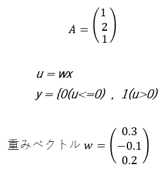

3.次の文章を読み、空欄に最もよくあてはまる選択肢をそれぞれ1つずつ選べ。
以下の計算規則により表される単純パーセプトロンによって次の入力が属するクラスを判定する
（出力値yが、属するクラス番号を表す）。

xは、クラス（ア）に属すると判定される。
| ア | A. 0 B. 1 |
答え Ｂ、Ａ、Ｂ
【解説】
| 重回帰分析を行う際には多重共線性に注意しなければなりません。（ア＝Ｂ） 多重共線性の英語「multicollinearity」を略して「マルチコ」と呼ばれています。 多重共線性を理解するには、まず相関係数の理解が必要です。 相関係数とは、特徴量同士の相関の正負と強さを表す指標です（イ＝Ａ） 相関係数は常に-1以上1以下の値をとり（ウ＝Ｂ）、1に近いほど強い正の相関、-1に近いほど強い負の相関を持ちます。 0のときは相関がありません。 |
 戻る
戻る 一覧へ
一覧へ 次へ
次へ